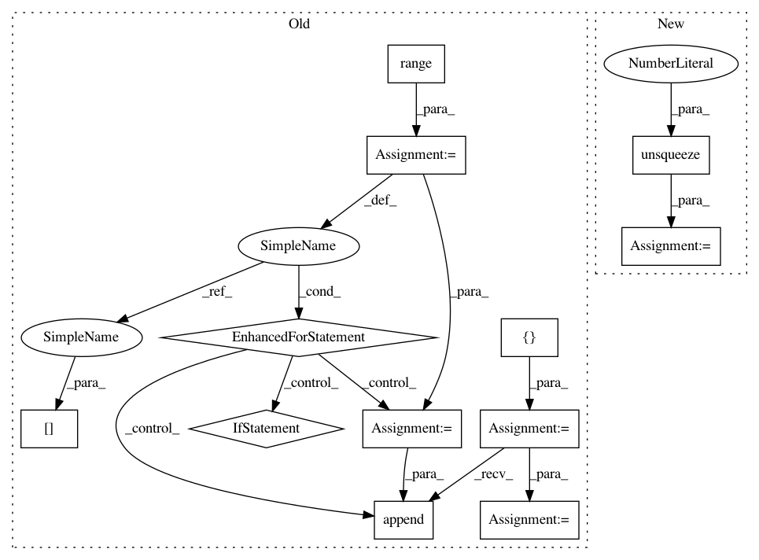

2026a8939d9ccc3e26ac776db5b4788846fd166c,dnc/sparse_memory.py,SparseMemory,read_from_sparse_memory,#SparseMemory#Any#Any#Any#Any#,181
Before Change
// read the kmeans closest and the least used memory
// TODO: for now we assume infinite memory, hence least used is the first free cell
read_vectors = []
pos = read_positions.squeeze().data.cpu().numpy()
for b in range(read_positions.size(0)):
read_vectors.append(T.stack([memory[b, p] for p in list(pos[b])], 0))
read_vectors = T.stack(read_vectors, 0)
return read_vectors, read_positions, read_weights
def read(self, read_query, hidden):
After Change
read_positions = T.cat([read_positions, last_used_mem.unsqueeze(1)], 2)
(b, m, w) = memory.size()
read_vectors = memory.gather(1, read_positions.squeeze().unsqueeze(2).expand(b, self.K+1, w))
return read_vectors, read_positions, read_weights
def read(self, read_query, hidden):
In pattern: SUPERPATTERN
Frequency: 3
Non-data size: 12
Instances
Project Name: ixaxaar/pytorch-dnc
Commit Name: 2026a8939d9ccc3e26ac776db5b4788846fd166c
Time: 2017-12-03
Author: root@ixaxaar.in
File Name: dnc/sparse_memory.py
Class Name: SparseMemory
Method Name: read_from_sparse_memory
Project Name: ixaxaar/pytorch-dnc
Commit Name: aa9592d811ad9765e06dd0e638e7cee9e5f4b00c
Time: 2017-11-10
Author: root@ixaxaar.in
File Name: dnc/dnc.py
Class Name: DNC
Method Name: _layer_forward
Project Name: ixaxaar/pytorch-dnc
Commit Name: 51caa2e2cebe2e6e8c06ffbb918448dd2db011a7
Time: 2017-11-10
Author: root@ixaxaar.in
File Name: dnc/dnc.py
Class Name: DNC
Method Name: _layer_forward